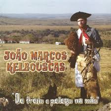

Tenho regalos que o tempo me deu
Por ser disposto e na vida ter fé
Tenho uma égua de florear no freio
Estrela agachada, bico pangaré
Tenho a acordeona que eu levo nos braços
Que me acompanha por aonde eu vou
Que quando chora e o fole suspira
Sua voz trocada fala quem eu sou
Que quando chora e o fole suspira
Sua voz trocada fala quem eu sou
Sou peão gaudério, só eu e a estrada
Ando solito sem ter companhia
De pago em pago eu levo pro povo
Algo que me falta, chamado alegria
De pago em pago eu levo pro povo
Algo que me falta, chamado alegria
Tenho saúde e uns troco guardado
Sou mal domado, mas trabalhador
Vivo feliz, mas falta ao meu lado
Uma morena pra me dar amor
Tempo e destino cruzaram de largo
E se esqueceram do meu coração
Voltei pro rancho sem o que esperava
E fiquei de freio e pelego na mão
Voltei pro rancho sem o que esperava
E fiquei de freio e pelego na mão
E quando chove, eu lido com corda
Já arrematei até um preparo novo
Trança de 12, todo completo
Pra quando eu posso ir passear no povo
E essa vida que pra tanta gente
É só um sonho, pra mim é verdade
Ninguém me manda, eu faço o que eu quero
Pois sou casado com a liberdade
Ninguém me manda, eu faço o que eu quero
Pois sou casado com a liberdade
Porém, amigo, por mais que eu goste
E que essa vida ainda me faça bem
Eu lhes confesso que junto aos pelegos
Pra mim faz falta o carinho de alguém
Eu lhes confesso que junto aos pelegos
Pra mim faz falta o carinho de alguém
Tenho saúde e uns troco guardado
Sou mal domado, mas trabalhador
Vivo feliz, mas falta ao meu lado
Uma morena pra me dar amor
Tempo e destino cruzaram de largo
E se esqueceram do meu coração
Voltei pro rancho sem o que esperava
E fiquei de freio e pelego na mão
Voltei pro rancho sem o que esperava
E fiquei de freio e pelego na mão
